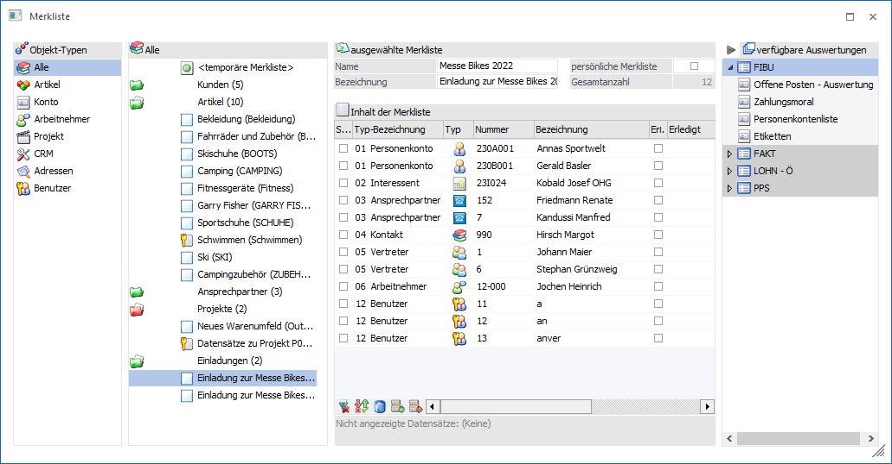
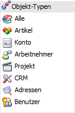
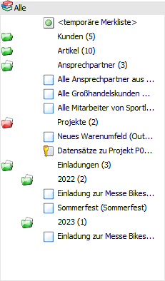
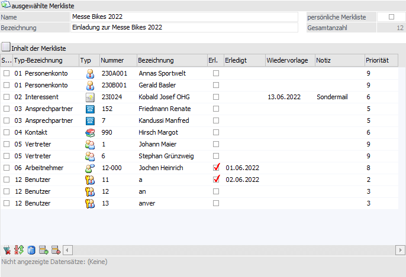
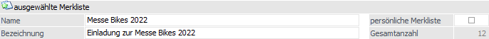
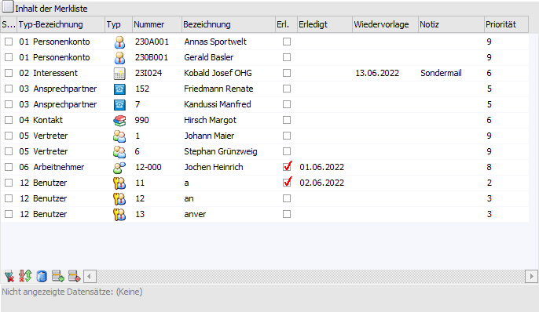
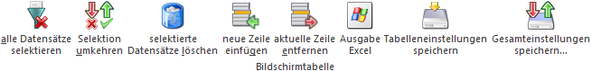

Im Fenster "Merklisten" können bestehende Merklisten bearbeitet oder auch neue Merklisten erstellt werden.

Das Fenster "Merkliste" ist in die folgenden Bereiche untergliedert:
ü Bereich "Objekt-Typen"
ü Bereich "Merklisten"
ü Bereich "Merklisten-Inhalt"
ü Bereich "verfügbare Auswertungen"
Bereich "Objekt-Typen"

Grundsätzlich können Merklisten viele unterschiedliche Datentypen beinhalten. Damit die zur Aufgabe passenden Merklisten dargestellt werden, gibt es den Bereich "Objekt-Typen". In der Tabelle werden die einzelnen Typen der Merklisten dargestellt und durch Anwahl eines Typs wird die Tabelle "Merklisten" entsprechend gefüllt, d.h. es werden nur jene Merklisten angezeigt, in denen der gewünschte Datentyp vorkommt. Eine Ausnahme bilden "Alle" und "Adressen":
ü
Es werden alle Merklisten in der
nachfolgenden Tabelle dargestellt.
ü
Innerhalb dieses Typs werden die
Merklisten im Kontext einer Kampagne dargestellt, d.h. es werden nur noch
Merklisten mit "Adressen" angezeigt und Funktionen wie Auswahl Ansprechpartner stehen zur
Verfügung. Details hierzu können dem Kapitel Merkliste - Merkliste als Kampagne
verwenden entnommen werden.
Bereich "Merklisten"

In der Tabelle werden alle Listen bzw. Ordner, gemäß des zuvor gewählten Typs (siehe Tabelle "Objekt-Typen"), angezeigt.
ü - persönlicher Ordner
ü - öffentlicher Ordner
ü - private Merkliste
ü - öffentliche Merkliste
Nach der Auswahl einer Merkliste oder eines Ordners können grundsätzlich folgende Aktionen durchgeführt werden:
ü Bearbeitung eines bestehenden
Ordners oder einer Merkliste
Über den rechten Bereich "Merklisten-Inhalt"
kann der Ordner bzw. die Merkliste editiert werden.
ü Änderung der Zuordnung
Sofern
Ordner vorhanden sind, können bestehende Merklisten via Drag & Drop einem
(anderen) Ordner zugeordnet werden. Zusätzlich können auch Ordner "in" Ordner
verschoben werden.
ü Löschen von Ordnern oder
Merklisten
Wenn ein Ordner oder eine Merkliste markiert ist kann diese mit
Hilfe des Button "Löschen" gelöscht werden, wobei das Löschen durch eine Abfrage
bestätigt werden muss.
ü Verwendung einer Merkliste
Eine
Merkliste kann per Drag & Drop auf eine Auswertung des Bereich "verfügbare
Auswertungen" geschoben werden. Hierdurch wird die Auswertung, gefiltert nach
den Datensätzen der Merkliste, ausgegeben. Nähere Information entnehmen Sie
bitte dem Kapitel Verwendung von
Merklisten.
Bereich "Merklisten-Inhalt"

In diesem Bereich kann der gewählte Ordner bzw. die ausgewählte Merkliste editiert werden.
Bereich "Merklisten-Inhalt" - ausgewählte Merkliste

Ø Name
Hier wird der Name der Merkliste angegeben. Bei Ordnern wird der Name vorbelegt und ist nicht änderbar.
Ø Bezeichnung
An dieser Stelle wird die Bezeichnung des Ordners bzw. der Merkliste hinterlegt.
Ø persönliche Merkliste
Pro Ordner bzw. Merkliste kann über diese Option definiert werden, ob es sich um ein "persönliches" oder "öffentliches" Objekt handelt.
Ø Gesamtanzahl
Handelt es sich um eine Merkliste, so wird an dieser Stelle die Anzahl der enthaltenen Datensätze angezeigt.
Bereich "Merklisten-Inhalt" - Tabelle "Inhalt der Merkliste"

Handelt es sich bei dem ausgewählten Objekt um eine Merkliste, so werden in der Tabelle die aktuellen Datensätze der Liste angezeigt und können editiert werden. Bei Ordnern hat die Tabelle keine Funktion. Unterhalb der Tabelle wird die Anzahl der Datensätze angezeigt, die aufgrund des gewählten Objekt-Typs gerade nicht angezeigt werden können.
Hinweis
Wenn Datensätze aus der aktuellen der Merkliste in einer anderen Liste benötigt werden, so können diese schnell und einfach übertragen werden. Hierfür werden einfach die gewünschten Datensätze der Merkliste markiert und per Drag & Drop auf eine andere existierende Merkliste gezogen.
Ø Sel.
Mit der Option "Sel." wird gesteuert, welche Datensätze bei Nutzung der Buttons "Auswahl in eine Merkliste / Kampagne kopieren" und " Auswahl aus einer existierenden Merkliste / Kampagne entfernen" bzw. bei Anwahl des Tabellenbuttons "selektierte Datensätze löschen" berücksichtigt werden sollen.
Ø Typ-Bezeichnung
An dieser Stelle wird der Typ des Datensatzes angezeigt bzw. kann bei einer neuen Zeile entsprechend vorgegeben werden. Folgende Typen stehen hierbei zur Auswahl:
ü 01 - Personenkonto
ü 02 - Interessent
ü 03 - Ansprechpartner
ü 04 - Kontakt
ü 05 - Vertreter
ü 06 - Arbeitnehmer
ü 07 - Arbeitnehmer (Mandant mit Landeskennzeichen D)
ü 08 - Artikel
ü 09 - Projekt
ü 10 - CRM
ü 11 - Konto
ü 12 - Benutzer
Hinweis
Es stehen nur dann alle Typen zur Verfügung, wenn die Merkliste über den Objekt-Typ "Alle" aufgerufen wird. Ansonsten ist Auswahl abhängig vom gewählten Typ.
Ø Typ
Diese Spalte gibt in Form eines Icons Auskunft darüber, um was für eine Art von Datensatz es sich handelt.
ü - Personenkonten
ü  - Interessenten (Interessenten werden in
der WinLine FAKT verwaltet)
- Interessenten (Interessenten werden in
der WinLine FAKT verwaltet)
ü - Ansprechpartner (von Personenkonten)
ü - Kontakte (Namen und Adressen ohne fixe Zuordnung)
ü  - Vertreter (Vertreter werden in der
WinLine FAKT verwaltet)
- Vertreter (Vertreter werden in der
WinLine FAKT verwaltet)
ü - Arbeitnehmer (Arbeitnehmer werden im WinLine LOHN A bzw. WinLine SMART verwaltet)
ü - Artikel (Artikel werden in der WinLine FAKT verwaltet)
ü - Projekte (Projekte werden in der WinLine FAKT verwaltet)
ü - CRM-Fälle
ü - Sachkonten
ü - Benutzer (Benutzer werden im WinLine ADMIN verwaltet)
Ø Nummer
Abhängig vom ausgewählten Datentyp kann im Feld "Nummer" die Datensatznummer eingetragen oder der Matchcode zur Übernahme der Daten aufgerufen werden.
Ø Bezeichnung
In dieser Spalte wird der Name bzw. die Bezeichnung des Datensatzes angezeigt.
Zusätzliche Datenfelder
In der Tabelle stehen auch einige Datenfelder zur Verfügung, die pro Datensatz bearbeitet werden können:
Ø Erl.
Mit Hilfe dieser Checkbox kann gekennzeichnet werden, dass die gewünschte "Aktion" mit dem Datensatz bereits vollzogen wurde.
Ø Erledigt
In dieser Spalte kann ein Erledigungsdatum hinterlegt werden.
Ø Wiedervorlage
In diesem Feld kann ein Wiedervorlagedatum hinterlegt werden, nach dem auch die Sortierung in der Tabelle vorgenommen werden kann.
Ø Notiz
In diesem Feld kann eine zusätzliche Information zu diesem Datensatz hinterlegt werden.
Ø Priorität
Aus der Auswahllistbox kann eine Priorität für den Datensatz hinterlegt werden, wobei nach dieser Priorität auch sortiert werden kann.
Tabellenbuttons

Ø alle Datensätze in Tabelle selektieren
Beim Drücken dieses Buttons wird die Checkbox "Sel." bei alle Datensätze der Tabelle aktiviert.
Ø Selektion umkehren
Durch Anklicken des Umkehr-Buttons wird die Option "Sel." bei allen Datensätzen in das Gegenteil gekehrt.
Ø selektierte Datensätze löschen
Mit Hilfe dieses Buttons werden alle selektierten Datensätze aus der Merkliste gelöscht.
Ø neue Zeile einfügen
Beim Anklicken dieses Buttons kann ein neuer Datensatz in die Tabelle eingefügt werden.
Ø aktuelle Zeile entfernen
Beim Drücken dieses Buttons wird der aktuell markierte Datensatz aus der Tabelle gelöscht.
Ø Ausgabe Excel
Durch Anwahl des Buttons "Ausgabe Excel" wird der Inhalt der Tabelle an Microsoft Excel übergeben.
Ø Tabelleneinstellungen speichern
Die Spalten einer Tabelle können grundsätzlich an beliebige Positionen verschoben, bzw. in der Breite entsprechend angepasst werden. Durch Anwahl des Buttons "Tabelleneinstellungen speichern" werden die Einstellungen benutzerspezifisch gespeichert und bei dem nächsten Aufruf des Programmpunktes wieder vorgeschlagen.
Ø Gesamteinstellungen speichern
Im Gegensatz zu "Tabelleneinstellungen speichern" können mit "Gesamteinstellungen speichern" mehrere Tabellenaufbauten gespeichert und nach Wunsch geladen werden. Zusätzlich werden Sonderfunktionen der Tabelle (z.B. "Spalte gruppieren") ebenfalls bei der Speicherung bedacht.